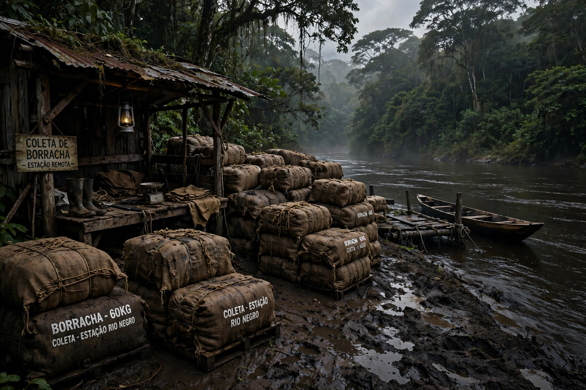

| Location | Putumayo and Caquetá river basins, Peru–Colombia border (Amazon rainforest) |
|---|---|
| Date | c. 1879–1912 (peak during the rubber boom) |
| Perpetrator | Peruvian Amazon Company of Julio César Arana; station managers and overseers |
| Victims | Indigenous peoples — Huitoto (Murui), Bora, Andoque, Ocaina and others |
| Deaths | Estimated tens of thousands (often cited 30,000–100,000+); regional population collapsed |
| Exposure | W. E. Hardenburg (1909–1912); Roger Casement's report (1910–1912) |

The Putumayo genocide (also called the Putumayo atrocities) was the systematic enslavement, torture and mass killing of Indigenous peoples in the rubber-producing Putumayo region of the Amazon, on the disputed Peru–Colombia frontier, during the Amazon rubber boom. Under the Peruvian Amazon Company of rubber baron Julio César Arana — a company registered in London — local Huitoto, Bora, Andoque and other peoples were forced to collect wild rubber under quotas enforced by flogging, starvation, mutilation and murder. Demographic collapse in the affected districts was catastrophic.
From the 1880s, soaring world demand for rubber drew concessionaires into the remote Putumayo. Arana's firm built a network of stations (secciones) along the Igaparaná and Cara Paraná rivers, controlled through debt peonage (habilitación) and armed overseers, many recruited in Barbados. Indigenous communities were compelled to deliver fixed quantities of rubber; failure was punished with exemplary violence. Disease, flight and killings reduced a population estimated in the tens of thousands to a fraction within a generation.
Reports by the Peruvian journalist Benjamín Saldaña Roca (1907) and the American engineer Walter Ernest Hardenburg, whose accounts appeared in the London magazine Truth from 1909, provoked a British parliamentary inquiry. The consul Roger Casement, fresh from exposing abuses in the Congo, investigated in 1910; his report (published 1912) documented the atrocities in detail. The Peruvian Amazon Company was liquidated in 1913, and an arrest warrant issued for Arana, but he was never tried and later served in the Peruvian Senate. The scandal became a byword for rubber-boom barbarity, echoed in literature from José Eustasio Rivera's novel La vorágine (1924) onward.